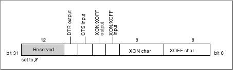

Using Serial Endpoints
Serial endpoint providers use standard Open Transport functions for binding, requesting and accepting connections, sending and receiving data, and managing options. You can send and receive the desired data using the standard Open TransportOTSndandOTRcvfunctions. You can call these functions either synchronously or asynchronously, as described in the chapter "Endpoints".In addition, Open Transport provides specialized serial-specific commands and options that allow you to
- set the flow-control handshaking
- use an external timing signal for synchronous clocking
- set or clear a break signal
- get status information about a port and any associated transmission errors
- define how characters with parity errors are handled
- request burst mode operation
- define receive timeout options
- set the framing type
Opening and Closing Serial Endpoints
To open serial endpoints, you need to supply a configuration string to theOTOpenEndpointfunction. The configuration string you supply depends on which serial port you want to open. The following constants are defined for the built-in ports; you can find other serial ports using the techniques descripted in "Ports".
Constant name String value Description kSerialName"serial"Default serial port kSerialPortAName"serialA"Serial port A (printer port)
kSerialPortBName"serialB"Serial port B (modem port)
kSerialPortABName"serialAB"Serial port AB (combined printer/modem port)
For example, the following line of code opens a serial endpoint on serial port A:
OTOpenEndpoint(OTCreateConfiguration(kSerialPortAName));There may be other serial ports available, such as those registered by the Communications Toolbox.To close a serial endpoint provider, you use the standard Open Transport function
OTCloseProvider, described in the chapter "Providers".Sending and Receiving Data
As with all endpoints, you must call theOTBindfunction before you can use a serial endpoint provider to send or receive data. For serial endpoint providers that initiate outgoing data, you need to bind with a queue length (theqlenparameter) of 0. When you wish to start transferring data, you must call theOTConnectfunction to place the endpoint in the data transfer state and allow theOTSndandOTRcvfunctions to be called. Calling theOTSndDisconnectfunction releases the connection.For serial endpoint providers that listen for incoming data, you need to bind with a queue length of 1. You cannot bind with a queue length greater than 1. When an incoming character is detected on the serial port, you receive a connect indication. You can accept the indication on the current endpoint, or you can accept it on another serial endpoint, that has a queue length of 0 or is not yet bound. In either case, once the accepting endpoint returns to the
T_IDLEstate, the original endpoint once again listens for incoming data and gets a connect indication if another incoming character is detected. Calling theOTSndDisconnectfunction on the accepting endpoint releases the connection and allows your endpoint to continue listening on the port. Your endpoint can continue to listen until you call theOTUnbindfunction.You can create a number of serial endpoints on a given serial port, but only one can have a connection at a time. The first serial endpoint to connect owns the hardware; other endpoints that subsequently attempt to connect receive a
kOTAddressBusyErrresult code.Using Serial-Specific Commands
You can control several aspects of serial communication by using the Open Transport functionOTIoctlwith different serial-specific commands. TheOTIoctlfunction, described in the chapter "Providers Reference", accesses the low-level serial driver control and status functions.You can assert the DTR signal for the serial port by using a value of
kOTSerialSetDTROnwith theI_SetSerialDTRcommand and you can negate it with a value ofkOTSerialSetDTROff. Likewise, you can use theI_SetSerialBreakcommand to set or negate the break signal with values ofkOTSerialSetBreakOnandkOTSerialSetBreakOffor you can use a number greater than 1 to indicate the number in milliseconds to assert a break signal temporarily.You can also use the
OTIoctlfunction commands to set the XOFF state of the serial port and to indicate whether the port is to send an XOFF or XON character. Using a value ofkOTSerialForceXOffTruewith theI_SetSerialXOffStatecommand sets the XOFF state of the serial port, which is equivalent to receiving an XOFF character, and using a value ofkOTSerialForceXOffFalsewith this command clears the XOFF state, which is equivalent to receiving an XON character.Using a value of 1 with the
I_SetSerialXOnandI_SetSerialXOffcommands causes the serial port to unconditionally send an XON or XOFF character, respectively. A value of 0 with these functions causes the character to be sent only if the last input flow-control character sent was the opposite kind--that is, the XOFF or XON character, respectively.Using Options to Change Serial Communications Settings
Serial endpoints currently support eight options. These options are defined by the XTI-level constantCOM_SERIAL, which has a value of'SERL'.When you open a serial endpoint, Open Transport configures the selected port with the default settings of 19200 baud, 8 data bits per character, no parity bit, 1 stop bit, and no handshaking. You can change these settings using various options, all of which use 4-byte unsigned integer values. There is also a serial status option that provides current information about the serial port. Four of the options are fairly straightforward and are described here; using the other options is more complicated, and their use is described in the two subsequent sections.
- The baud rate option sets the serial baud rate.The serial module chooses the closest baud rate supported that matches the requested rate. Possible values range from 300 to 230.4K baud transmission rates (depending on the hardware capability). The default value is 19200 baud.
- The data bits option selects the number of data bits to be used. Legal values are 5, 6, 7, and 8. The default value is 8 data bits.
- The stop bits option selects the number of stop bits to be used. This value corresponds to ten (10) times the actual number of stop bits. Legal values are 10, 15, and 20, which correspond to stop bits of 1, 1.5, and 2. The default value is 10, which is equivalent to 1 stop bit.
- The parity option selects the parity to be used. Legal values are
kOTNoParity 0),kOTOddParity(1), andkOTEvenParity(2). The default value iskOTNoParity.- The receive timeout option sets the number of milliseconds the receiver should wait to receive more data before timing out and delivering the data is already has. The default value is 10.
- The error character option defines how characters with parity errors are handled--that is, if they are replaced and with which character. Open Transport provides macros (and C++ inline functions),
OTSerialSetErrorCharacterandOTSerialSetErrorCharacterWithAlternate, to help place the character bits correctly.- The external clock option requests an external clock. This option may not be supported by all serial drivers.
- The burst mode option requests that the serial driver continues looping, reading incoming characters, rather than waiting for an interrupt for each character. This option may not be supported by all serial drivers.
Controlling Serial Port I/O Handshaking
You can use theSRL_OPT_HANDSHAKEoption to customize serial port handshaking in a variety of ways. For instance, you can request that an input handshake be controlled by the CTS line, or by the XON/XOFF sequence. To control the handshaking behavior, you pass in a 4-byte usigned integer value with theSRL_OPT_HANDSHAKEoption.A schematic diagram of this 4-byte option value is shown in Figure 19-2
Figure 19-2 Serial port I/O handshaking

The high word (16 bits) of the integer is a bitmap with one or more of the following bits set:
The third byte is the XON character value; the lowest byte is the XOFF character. If these values are 0 and XON/OFF handshaking is requested, the default values of control-S for XOFF and control-Q for XON are used. The default value of this option is no handshaking.
Open Transport provides a macro and a C++ inline function
(OTSerialHandshakeData) that you can use to create the 4-byte option value.For example, to enable XON/XOFF input handshaking, but to specify that the XON character be control-T rather than control-Q, you can create an option structure as follows:
opt.value = OTSerialHandshakeData( kOTSerialXOnOffInputHandshake | kOTSerialXOnOffOutputHandshake, 'T' - 64, 'S' - 64);Obtaining Status Information About the Serial Port
The serial status option is a read-only option that returns status information on the serial port. It is a 4-byte unsigned integer containing a bitmap that can provide the following information about errors or changes in status that may have occurred:Data received from the serial port passes through a hardware buffer and then into a software buffer managed by the input driver for the port. Each input driver's buffer can initially hold up to 1024 characters, but you can specify a larger buffer with standard Open Transport functions. This is normally not necessary because Open Transport provides additional buffering as part of its processing.
- A hardware overrun has occurred due to an overflow of the hardware input buffer.
- A software overrun has occurred due to an overflow of the software input buffer.
- A parity error has occurred due to the serial hardware detecting an incorrect parity bit.
- A framing error has occurred due to the serial hardware detecting a stop bit error.
- A break has occurred on the line.
- The endpoint provider has sent an XOFF character, which initiates flow control.
- The endpoint provider has negated the DTR signal, which initiates flow control.
- The endpoint provider has negated the CTS signal, which initiates flow control.
- The endpoint provider has received an XOFF character, and so all output is on hold.
- The endpoint provider has initiated a break that is still in progress.
Open Transport serial services are layered on top of the serial hardware driver. The capabilities of Open Transport endpoints depend on the driver. Consult the hardware documentation to determine the limitations of Open Transport for serial endpoints.
Because the serial hardware in some Macintosh computers relies on processor interrupts during I/O operations, overrun errors are possible if interrupts are disabled while data is being received on the serial port. To prevent such errors, the Disk Driver and other system software components are designed to store any data received by the modem port while they have interrupts disabled and then pass this data to the port's input driver. Because the system software only monitors the modem port, the printer port is not recommended for two-way communication at data rates above 300 baud.
Overrun, parity, and framing errors are usually handled by requesting that the sender retransmit the affected data. Break errors are typically initiated by the client application, which handles them as appropriate.
Using General Open Transport Functions With Serial Endpoints
This section describes any special considerations that you must take into account for Open Transport functions when you use them with serial endpoint providers. You should be familiar with the function descriptions in the chapter "Endpoints" before reading this section.Obtaining Endpoint Data With Serial Endpoints
This section describes the possible values you can get for endpoint information when using a serial endpoint.OTOpenEndpoint, OTAsyncOpenEndpoint, and OTGetEndpointInfo
The following values can be returned by theinfoparameter to theOTOpenEndpoint,OTAsyncOpenEndpoint, andOTGetEndpointInfofunctions when used with serial endpoint providers:
Parameter Serial Meaning info->addr0 Addresses are not used. info->optionsGreater than 0 Maximum number of bytes needed to hold protocol-specific options. info->tsduT_INVALIDTSDUs are not supported. info->etsduT_INVALIDTransfer of expedited data is not supported. info->connectT_INVALIDData cannot be sent with functions that establish connections. info->disconT_INVALIDData cannot be sent with abortive disconnects. info->servtypeT_COTSConnection oriented transactionless service. Orderly disconnects are not supported. info->flags- No flags are set. These fields and the significance of their values are described in more detail in the chapter "Endpoints Reference".
- IMPORTANT
- The values shown in the preceding table are subject to change. Be sure to use the
OTOpenEndpoint,OTAsyncOpenEndpoint, andOTGetEndpointInfofunctions to obtain the current values for these parameters.Using Endpoint Functions With Serial Endpoints
This section describes serial-specific information about functions described in the chapter "Endpoints".OTBind
TheOTBindfunction associates a serial port with the endpoint you specify. Because serial communication is point-to-point over a hardware connection, you cannot specify an address. Therefore, you must specify 0 as the length of the address in thereqaddr->TBind.addr.lenparameter. You can bind multiple serial endpoints to listen at a single port.With serial endpoints, the
req->qlenparameter, which specifies the number of outstanding connection requests that an endpoint can support, can only have a value of 0 or 1. To listen, a serial endpoint provider must have a queue length value of 1; to make connections, the endpoint can have a value of 0 or 1. A value greater than 1 results in an error code.OTConnect
TheOTConnectfunction requests a connection to a specified remote endpoint.Because serial endpoint providers do not allow you to send any application-specific data during the connection establishment phase, you must set the
sndcall->udata.lenfield to 0. Serial endpoints ignore thesndcall->udata.buffield.OTListen
TheOTListenfunction listens for an incoming connection request.Serial endpoints do not allow application-specific data to be included when you request a connection, so you need to set the
call->udata.maxlenfield to 0. Serial endpoints ignore thecall->udata.buffield.OTAccept
TheOTAcceptfunction accepts a connection request. You can accept a connection either on the same endpoint that received the connection request or on a different endpoint.Serial endpoints do not allow application-specific data to be included when you accept a connection, so you need to set the
call->udata.lenfield to 0. Serial endpoints ignore thecall->udata.buffield.OTSnd
TheOTSndfunction sends data through a connection-oriented transactionless endpoint. Serial endpoints do not support TSDUs.OTRcv
TheOTRcvfunction receives data through a connection-oriented transactionless endpoint. Serial endpoints do not support TSDUs.OTSndDisconnect
TheOTSndDisconnectfunction initiates an abortive disconnect or rejects a connection request.In an abortive disconnect, the
callparameter is ignored because serial endpoints do not allow application-specific data to be associated with a disconnect. You need to set thecall->udata.lenfield to 0. Serial endpoints ignore thecall->udata.buffield.OTRcvDisconnect
TheOTRcvDisconnectfunction returns information about why a connection attempt failed or an established connection was terminated.Because serial endpoints do not allow application-specific data to be associated with a disconnect, you need to set the
discon->udata.maxlenfield to 0. Serial endpoints ignore thediscon->udata.buffield.
Subtopics
- Opening and Closing Serial Endpoints
- Sending and Receiving Data
- Using Serial-Specific Commands
- Using Options to Change Serial Communications Settings
- Controlling Serial Port I/O Handshaking
- Obtaining Status Information About the Serial Port
- Using General Open Transport Functions With Serial Endpoints
- Obtaining Endpoint Data With Serial Endpoints
- OTOpenEndpoint, OTAsyncOpenEndpoint, and OTGetEndpointInfo
- Using Endpoint Functions With Serial Endpoints
- OTBind
- OTConnect
- OTListen
- OTAccept
- OTSnd
- OTRcv
- OTSndDisconnect
- OTRcvDisconnect